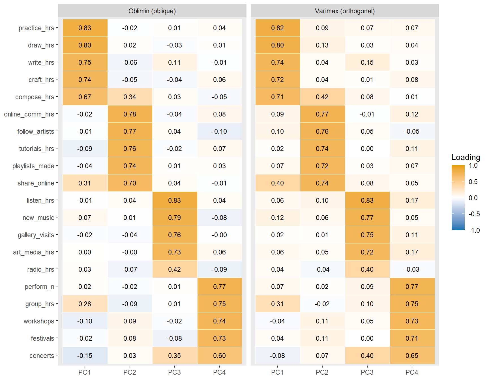
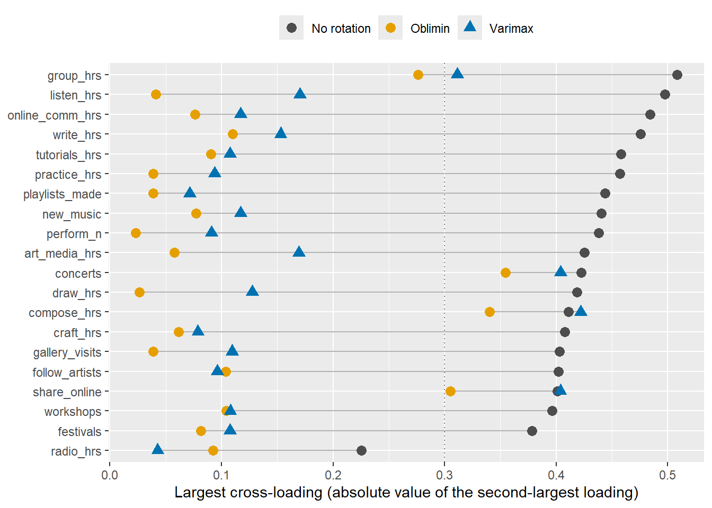

We will use the packages psych, ggplot2, knitr, & GPArotation these are already installed on the RStudio Server but if you are working on your own Laptop you may need to install them.
CREATE A NEW PROJECT
Just as we did in previous weeks we are going to start by creating a new project for this week’s homework. Download the data from the VLE (In the Week 9 Homework Materials section) and then copy it in the folder you created your project in. You can also find a direct download link for the data here: Github Link.
If you are working on the RStudio Server, then you will need to download the file to your computer and then upload it to the correct folder on the server.
Also create a new script in this folder so you can copy the lines of code needed to run this analysis yourself using just that script.
Now let’s load the packages that we will need for this analysis.
library(psych) library(knitr)library(ggplot2)
Attaching package: 'ggplot2'
The following objects are masked from 'package:psych':
%+%, alpha
library(GPArotation)
Attaching package: 'GPArotation'
The following objects are masked from 'package:psych':
equamax, varimin
SECTION A. THE DATASET
In the lecture we used factor analysis on a personality questionnaire. Here we will use principal component analysis (PCA) on a different kind of data: behaviours. A (simulated) study asked 400 students how often they take part in 20 arts activities. Each variable is a measured frequency (hours per week, or events per month or year), not a questionnaire item.
Variable
Activity
Unit
listen_hrs
Listening to music
hours / week
new_music
New artists or pieces discovered
per month
art_media_hrs
Watching or reading about music or art
hours / week
gallery_visits
Gallery or museum visits
per year
radio_hrs
Listening to the radio
hours / week
practice_hrs
Practising an instrument or voice
hours / week
compose_hrs
Composing or producing music
hours / week
draw_hrs
Drawing or painting
hours / week
write_hrs
Creative writing
hours / week
craft_hrs
Crafts or design
hours / week
perform_n
Public performances or exhibitions
per year
group_hrs
Time in group music or art activities
hours / week
workshops
Workshops or classes attended
per year
concerts
Live concerts attended
per year
festivals
Festival days attended
per year
share_online
Own work shared online
per month
follow_artists
Artists followed online
number
online_comm_hrs
Time in online arts communities
hours / week
playlists_made
Playlists or collections created
per month
tutorials_hrs
Online tutorials watched
hours / week
The other columns are id, course and age.
The students came from two courses Music and Art.
[1] 400 23
id course age listen_hrs new_music art_media_hrs gallery_visits radio_hrs
1 S362 Music 23 32.0 12 3.6 15 2.1
2 S183 Art 21 30.1 9 7.7 14 3.0
3 S055 Music 23 14.6 1 3.3 4 2.6
4 S212 Music 19 12.6 9 3.4 8 2.4
5 S350 Art 22 28.0 11 8.0 11 2.8
6 S202 Art 18 28.7 12 7.2 13 2.4
[1] 20
arts_raw <-read.csv("arts_engagement.csv")dim(arts_raw) # 400 rows, 23 columnshead(arts_raw[, 1:8])# Names of the 20 activity variables (every column except id, course and age)items <-setdiff(names(arts_raw), c("id", "course", "age"))length(items)
SECTION B. ASSUMPTION CHECKS
Is there any missing data? How should we deal with it?
colSums(is.na(arts_raw[, items]))[colSums(is.na(arts_raw[, items])) >0] # variables with missing values
sum(is.na(arts_raw[, items])) # total missing values
[1] 6
sum(!complete.cases(arts_raw))
[1] 6
Yes, there are missing values, with 6 missing values affecting 6 participants. With so little missing data, and a large sample, it is reasonable to delete these participants listwise. The missingness would need more thought if it were more widespread or clearly non-random (see the data screening lecture).
Remove the participants with missing values (listwise deletion) and keep just the activity variables for the analysis:
arts <-na.omit(arts_raw) #remove any rows with missing datax <- arts[, items] #x is just the activity variablesnrow(arts)
[1] 394
Check the descriptive statistics. Do the values look plausible? Is any variable strongly skewed?
desc <-describe(x)#only select certain columns of dsc for display as a kable and round to 2 dp.kable(round(desc[, c("mean", "sd", "min", "max", "skew")], 2))
mean
sd
min
max
skew
listen_hrs
19.78
6.76
1.1
42.4
0.13
new_music
7.94
2.99
0.0
15.0
-0.06
art_media_hrs
4.99
1.93
0.0
9.7
-0.18
gallery_visits
7.63
3.06
0.0
16.0
0.12
radio_hrs
2.96
1.40
0.0
7.3
0.13
practice_hrs
6.39
2.45
0.0
14.9
0.13
compose_hrs
3.14
1.44
0.0
7.4
0.21
draw_hrs
3.11
1.35
0.0
7.3
0.14
write_hrs
2.60
1.20
0.0
6.9
0.03
craft_hrs
2.63
1.21
0.0
6.6
0.17
perform_n
5.49
2.51
0.0
13.0
-0.01
group_hrs
4.37
1.78
0.0
11.2
0.35
workshops
4.33
2.04
0.0
11.0
0.07
concerts
7.43
2.89
0.0
16.0
0.03
festivals
3.14
1.48
0.0
8.0
0.10
share_online
5.15
2.39
0.0
12.0
0.16
follow_artists
29.30
12.07
0.0
67.0
0.17
online_comm_hrs
3.95
1.80
0.0
9.3
0.14
playlists_made
2.92
1.42
0.0
7.0
0.08
tutorials_hrs
3.02
1.38
0.0
6.9
0.11
The values are plausible: there are no negative hours or counts, and nothing impossible (such as more than 168 hours a week). The most skewed variable is group_hrs with a skew of 0.35, and every variable has an absolute skew below 0.4, so none is badly skewed. Unlike the Bem items in the Week 9 lab, these variables are continuous (hours and counts), so Pearson correlations are not a concern.
Is there any evidence of multicollinearity in the bivariate correlations?
We can use similar code as in the lab to calculate the correlation matrix, extract the lower triangle and then look for those with absolute values greater than 0.3:
r <-cor(x) # 20 x 20 correlation matrixr_off <- r[lower.tri(r)] # each pair of variables once, without the diagonal of 1sround(range(r_off), 2) # smallest and largest correlation
[1] -0.05 0.59
sum(abs(r_off) > .3) # how many pairs correlate above .3 (in absolute value)
[1] 47
length(r_off) # total number of pairs
[1] 190
No. The correlations range from -0.05 to 0.59, so none approaches .9. 47 of the 190 pairs exceed .3.
A heatplot is a good way to summarise all the correlations at once.
Try to use the code from the lab as a starting point and generate a heatplot for this correlation matrix. What does the pattern of results in the heatplot suggest?
Correlations between the 20 arts activities. Orange = positive, blue = negative.
The heatplot shows the correlated variables sitting in blocks of the matrix, which suggests there are groups of related activities.
What are the two tests we use to check if the correlation matrix is factorisable? Perform these checks and comment on the results
Bartlett’s test of sphericity and the Kaiser-Meyer-Olkin (KMO) measure of sampling adequacy.
Bartlett’s test:
bart <-cortest.bartlett(r, n =nrow(x))bart_table <-data.frame(`Chi-square`=round(bart$chisq, 2),df = bart$df,p =ifelse(bart$p.value < .001, "< .001", sprintf("%.3f", bart$p.value)),check.names =FALSE)kable(bart_table, align ="ccc", caption ="Bartlett test of sphericity")
Bartlett test of sphericity
Chi-square
df
p
2800.21
190
< .001
Bartlett’s test is significant (χ²(190) = 2800.21, p < .001), although with a large sample it is very sensitive.
Therefore, KMO values are a better guide:
kmo <-KMO(x)kmo_table <-data.frame(Item =c("Overall", names(sort(kmo$MSAi))),MSA =sprintf("%.3f", c(kmo$MSA, sort(kmo$MSAi))))kable(kmo_table, align ="lc", col.names =c("Variable", "KMO (MSA)"),caption ="Kaiser-Meyer-Olkin measure of sampling adequacy (variables sorted from lowest to highest)")
Kaiser-Meyer-Olkin measure of sampling adequacy (variables sorted from lowest to highest)
Variable
KMO (MSA)
Overall
0.852
radio_hrs
0.777
listen_hrs
0.789
festivals
0.805
gallery_visits
0.813
new_music
0.819
workshops
0.822
group_hrs
0.827
perform_n
0.836
concerts
0.842
tutorials_hrs
0.846
practice_hrs
0.860
draw_hrs
0.871
online_comm_hrs
0.872
share_online
0.874
write_hrs
0.877
art_media_hrs
0.880
follow_artists
0.880
playlists_made
0.886
compose_hrs
0.888
craft_hrs
0.893
The overall KMO is 0.85, and every individual MSA is above .6 (the lowest is radio_hrs at 0.78). These are all considered good or excellent and therefore good evidence that the correlation matrix is factorisable.
SECTION C. PCA
Why might PCA be a better choice than factor analysis for this dataset?
The 20 variables are observed behaviours, not questionnaire items that we think are caused by a hidden trait. Our aim is to summarise them into a smaller number of composite scores that describe how people engage with the arts. PCA does this directly, because each component is simply a weighted combination of the variables. Factor analysis assumes that unobserved factors cause the variables and analyses only the shared variance, which is a stronger claim than we want to make about, say, how many concerts someone attends. We don’t have an underlying theory about what might cause the relationships between the variables, which would be a clear indication that FA would be a better choice.
How many components should be retained?
First, the eigenvalues of the full correlation matrix, which is what PCA uses. This is also the matrix that Kaiser’s rule (eigenvalues > 1) was designed for.
sum(ev >1) # Kaiser's rule: how many eigenvalues are greater than 1?
[1] 4
This suggests we should retain 4 components.
Now a scree plot with a dashed line at 1, and the parallel analysis. We ask fa.parallel() for components (fa = "pc") because we are doing a PCA. The line for the random data is the average eigenvalue from the simulated datasets.
set.seed(2026) # the simulated data are random - this makes the results reproduciblepa <-fa.parallel(x, fa ="pc", n.iter =100, plot =FALSE)
Parallel analysis suggests that the number of factors = NA and the number of components = 4
pa$ncomp # number of components suggested by the parallel analysis
Scree plot with parallel analysis. The dashed grey line marks an eigenvalue of 1.
All three methods agree on 4 components:
Kaiser’s rule: 4 eigenvalues are greater than 1 (the fifth is 0.94). Scree plot: there is a clear elbow after component 4, with a large drop from 1.87 to 0.94. Parallel analysis: the first 4 observed eigenvalues are larger than the average eigenvalues from random data, and the fifth is not. Together the four components account for 58.5% of the variance. This is much clearer than in the Week 9 Lab example, where the methods disagreed.
NOTE: You can ignore the factors = NA part of the output of fa.parallel() this is to be expected when using fa = "pc".
Here we will begin with an oblique rotation method, why might this be a good approach?
We don’t know if our components are correlated and therefore forcing them to be uncorrelated with an orthogonal rotation might not be the best solution. Therefore, it is wise to let them be free to correlate to begin with and then examine the degree of correlation before deciding whether or not to proceed to an orthogonal rotation method.
Run a PCA with 4 components and an oblique (oblimin) rotation. What are the loadings?
Use principal() from the psych package with nfactors = 4 and rotate = "oblimin".
fit_ob <-principal(x, nfactors =4, rotate ="oblimin")# psych orders the components by variance but keeps their original labels (TC1, TC3, ...).# We re-label them PC1-PC4 in the order they now appear.ord_ob <-order(fit_ob$Vaccounted["SS loadings", ], decreasing =TRUE)L_ob <-unclass(fit_ob$loadings)[, ord_ob]colnames(L_ob) <-paste0("PC", 1:4)# Round once, so the table and all the counting below agreeL_ob_r <-round(L_ob, 2)L_ob_r
# Complex variables: those with loadings at or above the cut-off on more than one componentcomplex_ob <-names(which(rowSums(abs(L_ob_r) >= cutoff) >1))complex_ob
[1] "compose_hrs" "concerts" "share_online"
Every variable has a clear main loading on one component, ranging from 0.42 to 0.83. 3 variables are complex, with loadings of .30 or more on two components: compose_hrs, concerts, share_online. radio_hrs has the weakest main loading and the highest uniqueness (0.84).
Compare the results obtained with PCA to the original correlation matrix heatplot. Do you notice any similarities?
The first thing to notice is that in the correlation heatplot we can see 4 larger squares of variables that seem to correlate with each other but not the other variables. These are our four components and the variables with high loadings in each component match with the plot.
e.g. listen_hrs, new_music, art_media_hrs, & gallery_visits all load onto PC3. Notice that the PCs aren’t in the same order as the heatplot as they are ordered by variance accounted for.
If we look at radio_hrs we can see that it is the weakest loading and also seems to stand apart from other variables in the heatplot.
Also, our three complex items are those that show high correlations outside of their group in the heatplot.
The four components explain 58.5% of the variance in total. PC1 explains the most (15.9%), but the four are quite similar in size. Dividing the SS loadings by 20 (the number of variables) gives the percentage of the total variance, because each standardised variable has a variance of 1.
What are the correlations between the components? Is an oblique rotation really needed?
phi <- fit_ob$Phi[ord_ob, ord_ob]dimnames(phi) <-list(paste0("PC", 1:4), paste0("PC", 1:4))kable(round(phi, 2), caption ="Correlations between the oblimin components")
Correlations between the oblimin components
PC1
PC2
PC3
PC4
PC1
1.00
0.27
0.15
0.12
PC2
0.27
1.00
0.11
0.12
PC3
0.15
0.11
1.00
0.27
PC4
0.12
0.12
0.27
1.00
max(abs(phi[lower.tri(phi)])) # largest correlation between two components
[1] 0.2721221
The correlations between components are small: the largest is 0.27, and all the others are below .3. A common rule of thumb is that correlations around .32 (about 10% shared variance) or more justify an oblique rotation, so here an orthogonal rotation is reasonable. It also gives a simpler solution, because the pattern and structure matrices are identical when components are uncorrelated.
SECTION D. PCA WITH ORTHOGONAL ROTATION
Re-run the PCA with an orthogonal (varimax) rotation
However, the components can come out in a different order, and with flipped signs, in a different solution. We therefore match each varimax component to the oblimin component it most resembles. The order can change because rotation redistributes the variance between components, and psych sorts them by how much variance they explain.
The sign of a component is arbitrary because a component is defined only by its direction, not by which end is “high”. If we multiply both a component’s loadings and its scores by −1, the data the solution reproduces, the variance explained and the communalities are exactly the same. Only the interpretation reverses, so that a high score now means a low score on the original component. Flipping a component so that most of its loadings are positive usually makes it easier to interpret.
The code below matches them between the two solutions.
cong <-fa.congruence(L_ob, unclass(fit_vm$loadings)) # similarity of every pair of componentsord_vm <-apply(abs(cong), 1, which.max) # best match for each oblimin componentstopifnot(!anyDuplicated(ord_vm)) # check each is matched only onceflip <-sign(cong[cbind(1:4, ord_vm)]) # reverse any component whose sign is flippedL_vm <-sweep(unclass(fit_vm$loadings)[, ord_vm], 2, flip, "*")colnames(L_vm) <-paste0("PC", 1:4)L_vm_r <-round(L_vm, 2)shown_vm <- L_vm_rshown_vm[abs(shown_vm) < cutoff] <-NAkable(data.frame(shown_vm, Uniqueness =round(fit_vm$uniquenesses, 2)),col.names =c("PC1", "PC2", "PC3", "PC4", "Uniqueness"),caption ="Varimax loadings (loadings below .30 hidden)")
Varimax loadings (loadings below .30 hidden)
PC1
PC2
PC3
PC4
Uniqueness
listen_hrs
0.83
0.28
new_music
0.77
0.38
art_media_hrs
0.72
0.44
gallery_visits
0.75
0.43
radio_hrs
0.40
0.84
practice_hrs
0.82
0.31
compose_hrs
0.71
0.42
0.32
draw_hrs
0.80
0.35
write_hrs
0.74
0.42
craft_hrs
0.72
0.47
perform_n
0.77
0.40
group_hrs
0.31
0.75
0.34
workshops
0.73
0.45
concerts
0.40
0.65
0.41
festivals
0.71
0.48
share_online
0.40
0.74
0.29
follow_artists
0.76
0.41
online_comm_hrs
0.77
0.39
playlists_made
0.72
0.46
tutorials_hrs
0.74
0.45
And again we can extract our complex components and check the variance accounted for:
complex_vm <-names(which(rowSums(abs(L_vm_r) >= cutoff) >1))complex_vm # complex variables after varimax
round(sum(fit_vm$Vaccounted["SS loadings", ]) /20*100, 2) # total % variance, varimax
[1] 58.47
round(sum(fit_ob$Vaccounted["SS loadings", ]) /20*100, 2) # total % variance, oblimin
[1] 58.47
The overall pattern is the same, and the total variance explained is identical (58.5%) because rotation does not change how much variance four components account for, only how it is shared out between them. The uniqueness values are the same too, for the same reason. One difference is that group_hrs is now complex as well: its secondary loading rises just above the .30 cut-off.
We can examine which loadings changed most when we moved from oblimin to varimax:
change <-data.frame(variable =rep(rownames(L_ob), times =4),component =rep(paste0("PC", 1:4), each =nrow(L_ob)),oblimin =as.vector(L_ob),varimax =as.vector(L_vm))change$difference <- change$varimax - change$oblimintop <- change[order(-abs(change$difference)), ][1:8, ]kable(top, digits =2, row.names =FALSE,col.names =c("Variable", "Component", "Oblimin", "Varimax", "Change"),caption ="The 8 largest changes in loading")
The 8 largest changes in loading
Variable
Component
Oblimin
Varimax
Change
listen_hrs
PC4
0.04
0.17
0.13
new_music
PC4
-0.08
0.05
0.13
gallery_visits
PC4
0.00
0.11
0.11
online_comm_hrs
PC1
-0.02
0.09
0.11
art_media_hrs
PC4
0.06
0.17
0.11
tutorials_hrs
PC1
-0.09
0.02
0.11
practice_hrs
PC2
-0.02
0.09
0.11
playlists_made
PC1
-0.04
0.07
0.11
max(abs(change$difference)) # largest change in any loading
[1] 0.1306077
round(mean(abs(change$difference)), 3) # average change
[1] 0.05
The changes are small overall (the average absolute change is 0.050 and the largest is 0.13), which is what we expect when the components are only weakly correlated. The largest changes are not in the main loadings. They are small increases in loadings that were close to zero under oblimin (for example, listen_hrs on PC4 goes from 0.04 to 0.17). The secondary loadings of the complex variables (compose_hrs, share_online, group_hrs and concerts) also get larger under varimax. This happens because the components are positively correlated. Oblimin takes that overlap into account when it estimates each loading, whereas varimax forces the components to be uncorrelated, so the overlap is pushed into small positive loadings on the “other” components instead.
We can also examine these changes graphically, through either a heatplot:
# One row per variable x component x solutionlong <-rbind(data.frame(variable =rownames(L_ob), component =rep(paste0("PC", 1:4), each =20),loading =as.vector(L_ob), solution ="Oblimin (oblique)"),data.frame(variable =rownames(L_vm), component =rep(paste0("PC", 1:4), each =20),loading =as.vector(L_vm), solution ="Varimax (orthogonal)"))# Order the variables by the component they load on most (in the oblimin solution)main_comp <-max.col(abs(L_ob))var_order <-rownames(L_ob)[order(main_comp, -apply(abs(L_ob), 1, max))]long$variable <-factor(long$variable, levels =rev(var_order))ggplot(long, aes(x = component, y = variable, fill = loading)) +geom_tile(colour ="white") +geom_text(aes(label =sprintf("%.2f", loading)), size =3) +facet_wrap(~ solution) +scale_fill_gradient2(low = col_blue, mid ="white", high = col_orange,midpoint =0, limits =c(-1, 1), name ="Loading") +labs(x =NULL, y =NULL) +theme(panel.grid =element_blank())

Loadings under the oblique (oblimin) and orthogonal (varimax) rotations.
Change in each loading from oblimin (orange) to varimax (blue). The dotted lines mark the .30 cut-off.
In the heatmap the two panels look almost identical: each variable’s main loading is essentially unchanged. The dumbbell plot shows the differences more clearly. For the main loadings the two dots almost overlap, so there is hardly any segment. The visible segments are mostly small upward shifts of about 0.1 in loadings that were near zero (for example, online_comm_hrs on PC1), plus the larger secondary loadings of compose_hrs (PC2), share_online (PC1) and group_hrs (PC1). In each case the blue (varimax) dot sits to the right of the orange (oblimin) dot. The solutions are similar because the correlations between components are small.
Suggest a label for each component
List the variables that load on each component (at or above the cut-off) to help you decide.
PC 1 : practice_hrs, compose_hrs, draw_hrs, write_hrs, craft_hrs, group_hrs, share_online
PC 2 : compose_hrs, share_online, follow_artists, online_comm_hrs, playlists_made, tutorials_hrs
PC 3 : listen_hrs, new_music, art_media_hrs, gallery_visits, radio_hrs, concerts
PC 4 : perform_n, group_hrs, workshops, concerts, festivals
Good suggestions might be:
PC1: Creative practice (practising, composing, drawing, writing, crafts)
PC2: Digital engagement (sharing online, following artists, online communities, tutorials, playlists)
PC3: Receptive engagement (listening, discovering, reading or watching about the arts, galleries)
PC4: Social performance (performing, groups, workshops, concerts, festivals)
Remember that the label should name something that can be given a score: you can have a score on social performance, but not on “performing”. The complex variables are worth discussing: for example, concerts mainly reflects social performance but also receptive engagement (going to a concert is both a social event and a form of listening). radio_hrs has the weakest loading, so radio listening is only loosely related to the rest of the receptive component.
SECTION E. COMPARISON WITH NO ROTATION
We have compared oblique and orthogonal rotations, but it is also possible to look at the effect of applying a rotation in general and why they are so useful.
The code below performs the same PCA analysis with the same number of components rotate = "none" input argument to principal().
Instead of plotting loadings component by component, it plots each variable’s biggest cross-loading under the three solutions.
In the plot, the unrotated dots (grey) sit at 0.2–0.5 for almost every variable, well past the dotted .30 line. Most of the oblimin (orange) and varimax (blue) dots sit at about 0.05–0.15, and only the complex variables (concerts, compose_hrs and share_online, plus group_hrs for varimax) stay near or above .30. The summary table gives 19, 3 and 4 complex variables, with mean cross-loadings of 0.42, 0.12 and 0.17.
One thing to note is that group_hrs has the highest unrotated cross-loading (0.51), and it is the one variable that rotation doesn’t fully resolve.
# 1. PCA with no rotationfit_none <-principal(x, nfactors =4, rotate ="none")L_none <-unclass(fit_none$loadings) # already ordered PC1-PC4 by variancecolnames(L_none) <-paste0("PC", 1:4)# 2. Size of each variable's largest "other" loading (its biggest cross-loading):# sort each row's absolute loadings and take the second largestsecond_largest <-function(L) apply(abs(L), 1, function(v) sort(v, decreasing =TRUE)[2])cross <-data.frame(variable =rownames(L_none),none =second_largest(L_none),oblimin =second_largest(L_ob),varimax =second_largest(L_vm))# Order the variables by their unrotated cross-loading (largest at the top)cross$variable <-factor(cross$variable, levels = cross$variable[order(cross$none)])# 3. Dumbbell plot: one row per variable, one dot per solutioncross$low <-pmin(cross$none, cross$oblimin, cross$varimax) # ends of the connecting linecross$high <-pmax(cross$none, cross$oblimin, cross$varimax)cross_long <-data.frame(variable =rep(cross$variable, 3),solution =factor(rep(c("No rotation", "Oblimin", "Varimax"), each =nrow(cross)),levels =c("No rotation", "Oblimin", "Varimax")),value =c(cross$none, cross$oblimin, cross$varimax))ggplot(cross, aes(y = variable)) +geom_vline(xintercept = cutoff, linetype ="dotted", colour ="grey50") +geom_segment(aes(x = low, xend = high, yend = variable), colour ="grey70") +geom_point(data = cross_long, aes(x = value, colour = solution, shape = solution), size =3) +scale_colour_manual(values =c("No rotation"="grey30", "Oblimin"= col_orange, "Varimax"= col_blue)) +scale_shape_manual(values =c("No rotation"=16, "Oblimin"=16, "Varimax"=17)) +labs(x ="Largest cross-loading (absolute value of the second-largest loading)",y =NULL, colour =NULL, shape =NULL) +theme(legend.position ="top")

# 4. Summary numbers: variables loading on 2+ components, and the average cross-loadingdata.frame(Solution =c("No rotation", "Oblimin", "Varimax"),Complex_variables =c(sum(cross$none >= cutoff), sum(cross$oblimin >= cutoff), sum(cross$varimax >= cutoff)),Mean_cross =round(c(mean(cross$none), mean(cross$oblimin), mean(cross$varimax)), 2))
One advantage of PCA is that each participant gets a component score, which we can use in further analyses. Compare the two courses on each (varimax) component score.
scores <-unclass(fit_vm$scores)[, ord_vm] # same component order and labels as abovescores <-sweep(scores, 2, flip, "*")colnames(scores) <-paste0("PC", 1:4)
We can then perform t-tests to see if the scores on each PC differ between the two courses and create some boxplots:
The courses differ on PC1 and PC4. The Art students score higher on PC1 (Creative practice; t(391.5) = -3.28, p = .001), and the Music students score higher on PC4 (Social performance; t(391.3) = 4.31, p < .001). There is no clear difference on Digital engagement or Receptive engagement. (The component scores have a mean of 0 and a standard deviation of 1 across all students, so the differences are in standard deviation units.)
SECTION G. WRITE-UP
Here is a short summary of the entire analysis:
A principal component analysis was run on 20 arts-engagement variables from 394 students (6 participants with missing data were excluded). The correlation matrix was suitable for analysis (Bartlett’s test χ²(190) = 2800.21, p < .001; overall KMO = 0.85). Kaiser’s rule, the scree plot and parallel analysis all supported retaining four components, which together explained 58.5% of the variance. An oblique (oblimin) rotation showed small correlations between the components (largest r = 0.27), so a varimax rotation was used. The components were labelled creative practice, digital engagement, receptive engagement and social performance. 3 variables (compose_hrs, concerts, share_online) loaded on more than one component under oblimin, and group_hrs also did after varimax. Art students scored higher on creative practice, and Music students scored higher on social performance.